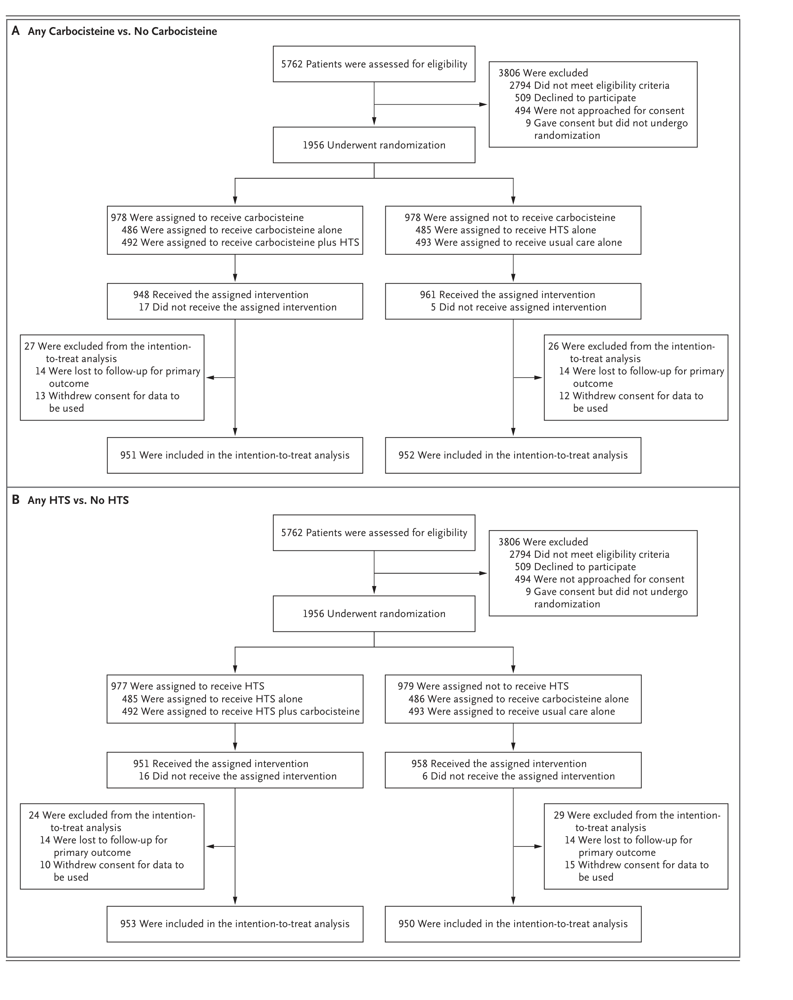

#3 RESPIRATORY SYSTEM / 去痰薬（ムコアクティブ薬）
| ムコアクティブ薬 | mucoactive agent — 喀痰の性状・産生・排出を変化させる薬剤の総称（去痰薬） |
| HTS | Hypertonic Saline — 高張食塩水（本試験では6%または7%、ネブライザー投与） |
| ARF | Acute Respiratory Failure — 急性呼吸不全 |
| IMV | Invasive Mechanical Ventilation — 侵襲的人工呼吸 |
| ARDS | Acute Respiratory Distress Syndrome — 急性呼吸窮迫症候群 |
| APACHE II | Acute Physiology and Chronic Health Evaluation II — 重症度スコア（0〜71、高値ほど重症） |
| SOFA | Sequential Organ Failure Assessment — 臓器障害スコア（0〜24、高値ほど重症） |
| 2×2 factorial | 2要因デザイン — 2つの介入を同時に検証する無作為化試験デザイン |
| ITT | Intention-to-Treat — 治療意図解析（割り付け通りに解析） |
| CACE | Complier Average Causal Effect — 服薬遵守者における因果効果の推定解析 |
| HR | Hazard Ratio — ハザード比 |
| RR | Risk Ratio — リスク比 |
| CI | Confidence Interval — 信頼区間 |
| RCT | Randomized Controlled Trial — 無作為化比較試験 |
| GI | Gastrointestinal — 消化管 |
| PaO₂:FiO₂ | 動脈血酸素分圧／吸入酸素濃度比（P/F比、低値ほど酸素化不良） |
急性呼吸不全（ARF）はICU入室の最多原因である。侵襲的人工呼吸（IMV）は粘液線毛クリアランスの破綻や分泌物の性状（量・レオロジー特性）の変化を介して、気道分泌物の貯留をきたしやすくする。この排出困難な分泌物に対して、喀痰の性状・排出を変化させるムコアクティブ薬（去痰薬）がしばしば経験的に使用されてきた。
国際データでは、ムコアクティブ薬は80%超のICUで使用され、IMVを受ける患者の約20〜30%に投与されている。なかでもカルボシステイン（粘液調整薬 mucoregulator）と高張食塩水（HTS、去痰薬 expectorant）が最も頻用される2剤である。
広く使われている一方で、その有効性・安全性のエビデンスは限られていた。2020年のシステマティックレビューは、ARF患者におけるムコアクティブ薬使用のエビデンスは限定的であると結論づけた。具体的には、カルボシステインの使用を支持または否定するデータは存在せず、高張食塩水については結果が一貫せず質も低かった。
この不確実性を解消するため、16歳以上のARF患者を対象に、通常ケアに加えたカルボシステインと高張食塩水の臨床的有効性を、通常ケア単独と比較する試験が計画された。これがMARCH試験（Mucoactives in Acute Respiratory Failure: Carbocisteine and Hypertonic Saline）である。
MARCH試験は、英国71施設で実施された第3相・オープンラベル・2×2要因デザインの無作為化試験である。重症で人工呼吸管理中の急性呼吸不全患者を対象とした。登録は2022年2月17日から2025年4月30日に行われ、1956例を1:1:1:1に無作為割り付けした（施設で層別化）。最終登録例の追跡は2025年10月31日に完了した。
2×2要因デザインのため、主要な比較は「カルボシステインあり vs なし」と「高張食塩水あり vs なし」の2系統で行われ、各比較はそれぞれ2つの治療群から構成される。2剤間の交互作用は主要比較の前に正式に検定された。
全例が通常ケアを受けたうえで、以下の4群のいずれかに割り付けられた（最長28日間）。
高張食塩水の6%/7%の選択は各施設の入手状況に応じた実用的判断であり、臨床現場での互換的使用を反映している。両剤とも推奨される適応・用量に従って使用された。
主要評価項目は人工呼吸期間で、無作為化から最初の「補助なし自発呼吸の確立」（48時間維持される）または死亡までの時間（時間単位）と定義された。補助なし自発呼吸とは吸気サポートも体外式肺補助もない状態を指す。気管切開チューブまたは気管チューブが留置されていても、補助なし自発呼吸の確立は達成可能とされた。追跡は無作為化後最長60日間。
サンプルサイズは、中央値7日間の人工呼吸期間を前提に各比較で1日間の短縮（HR 0.86相当）を検出するため、90%検出力・有意水準0.05で1856例（各群464例）と算出。5%の追跡脱落を見込んで1956例（各群489例）とした。1日間の短縮という最小臨床的意義のある差は、患者・家族アドバイザーとの議論にも基づいて設定された。
5762例が適格性評価を受け、3806例が除外（2794例が適格基準を満たさず、509例が参加辞退、494例が同意のため接触されず、9例が同意したが無作為化されず）、1956例が無作為化された。Panel Aは「カルボシステインあり vs なし」、Panel Bは「高張食塩水あり vs なし」の比較群のフローを示す。各比較で約950例ずつがITT解析に組み入れられた。

比較群間で患者背景はおおむね均等であった。平均年齢は約57歳、約70%が男性、白人が約86%。重症度はAPACHE II 約17点、SOFA 約9.4点と高く、約21%がARDSを合併していた。約71%が肺感染症に対する抗菌薬を投与中で、PaO₂:FiO₂比は約221〜224 mmHgであった。治療期間は各群約12日間、服薬遵守率は約85%であった。
2剤間に統計学的交互作用は認めなかった（交互作用のHR 1.01、95%CI 0.83〜1.22、P=0.91）。要因デザインの前提どおり、この交互作用検定を主要比較に先立って行い、主効果の解析が妥当であることを確認した。
人工呼吸期間（主要評価項目）は、カルボシステインあり vs なし、高張食塩水あり vs なしのいずれの比較でも有意差を認めなかった。
| 比較 | 介入あり 中央値（95%CI） | 介入なし 中央値（95%CI） | 調整HR（95%CI） | P値 |
|---|---|---|---|---|
| カルボシステイン あり vs なし |
186.1時間 （168.3〜196.6） |
172.7時間 （165.2〜190.4） |
0.96 （0.87〜1.05） |
0.34 |
| 高張食塩水 あり vs なし |
184.5時間 （165.6〜194.1） |
174.3時間 （166.9〜192.7） |
1.00 （0.91〜1.10） |
0.98 |
いずれもHRは1.0付近で信頼区間が1をまたいでおり、人工呼吸期間の短縮効果は認められなかった。4群個別の解析・ペアワイズ比較・服薬遵守者を対象とした事後CACE解析でも、結果は主解析と同様であった。
抜管までの時間、再挿管、呼吸理学療法、抗菌薬使用期間、ICU・在院期間、死亡のいずれの副次評価項目でも、カルボシステイン・高張食塩水で意味のある差は認められなかった。
| 副次評価項目 | カルボシステイン あり vs なし | 高張食塩水 あり vs なし |
|---|---|---|
| 初回抜管成功までの時間 HR（95%CI） | 1.03（0.92〜1.15） | 1.00（0.89〜1.11） |
| 再挿管 RR（95%CI） | 1.02（0.70〜1.50） 5.2% vs 5.1% | 1.30（0.88〜1.91） 5.8% vs 4.5% |
| ICU在室期間 中央値（日） | 14 vs 14 | 14 vs 14 |
| 28日死亡 RR（95%CI） | 0.96（0.82〜1.13） 22.8% vs 23.7% | 0.92（0.79〜1.09） 22.3% vs 24.2% |
| 60日死亡 RR（95%CI） | 0.91（0.79〜1.06） 25.4% vs 27.9% | 0.93（0.80〜1.08） 25.7% vs 27.6% |
※副次評価項目の信頼区間は多重性調整されておらず、確定的な治療効果の推定には使用できない。
| 安全性アウトカム | 介入あり | 介入なし | RR（95%CI） | P値 |
|---|---|---|---|---|
| 臨床的に重要な上部消化管出血 カルボシステイン あり vs なし |
13/965 （1.4%） |
2/966 （0.2%） |
6.51 （1.47〜28.76） |
0.01 |
| 気管支収縮（気管支拡張薬使用に至る） 高張食塩水 あり vs なし |
23/967 （2.4%） |
4/964 （0.4%） |
5.73 （1.99〜16.52） |
0.001 |
| ネブライザー中の低酸素血症 高張食塩水 あり vs なし |
40/967 （4.1%） |
3/964 （0.3%） |
13.29 （4.12〜42.83） |
<0.001 |
| 人工呼吸器・回路の機能障害 高張食塩水 あり vs なし |
12/967 （1.2%） |
6/964 （0.6%） |
1.99 （0.75〜5.29） |
0.17 |
各事象の絶対頻度は低い（全体で消化管出血0.8%、気管支収縮1.4%、ネブライザー中低酸素2.2%）が、相対リスクは大きい。特にネブライザー中の低酸素は高張食塩水で13倍超に増加した。重篤な有害反応は併用群の1例（0.2%）のみで、下部消化管出血（トラネキサム酸投与・輸血を要した）でカルボシステインに関連と判断された。予期しない重篤な有害事象はどの群でも発生しなかった。
急性呼吸不全の重症患者において、通常ケアへのカルボシステインまたは高張食塩水の追加には利益がなく、両剤とも有害であった。したがって臨床現場での使用には注意を要する。本試験は、最も頻用される2つのムコアクティブ薬の臨床的有効性の欠如を示し、ムコアクティブ治療を「低価値ケア（low-value care）」として脱実装することを示唆する近年の観察研究を裏づけた。
高張食塩水のネブライザー関連の害は、N-アセチルシステインに関する既存データとも一致する。また、有効性の欠如と有害事象（カルボシステインで消化管障害、高張食塩水で呼吸器障害が多い）という同様の所見は、気管支拡張症など他の呼吸器疾患でも報告されている。
本試験には以下の限界がある。第一に、適格基準の「排出困難な分泌物」は標準的定義がなく臨床医の判断によるため、評価者間のばらつきがありうる。今後、分泌物評価の客観的指標の開発が望まれる。第二に、無作為化前のムコアクティブ治療の割合を収集しておらず、結果を無効方向にバイアスさせた可能性がある。
第三に、オープンラベルデザインのため、割り付けにムコアクティブ薬を含まない群の一部でも実際には薬剤が投与された（プロトコル外曝露）。ただしCACE解析は主要ITT解析を支持した。第四に、高張食塩水投与前のテスト投与や気管支拡張薬の前投与プロトコルを設けておらず、これが高張食塩水群の害の所見に寄与した可能性がある。サブグループ解析では、ムコアクティブ薬から最も利益を得る患者特性を同定できなかった。
本試験は英国中心ながら71の多様な施設で実施され、登録集団は英国の集中治療入院を代表しており、結果は一般化可能と考えられる。研究デザイン時点で最も頻用され、かつ有効性のエビデンスが欠如（カルボシステイン）または不確実（高張食塩水）であった2剤を検証した点に意義がある。
出典：Connolly B, Dickson N, Campbell C, et al.; MARCH Trial Investigators. Carbocisteine or Hypertonic Saline for Acute Respiratory Failure. N Engl J Med. 2026.（2026年6月10日 NEJM.org にて公開）
DOI：https://doi.org/10.1056/NEJMoa2603406
本資料は教育目的で作成したサマリーです。診断・治療方針の決定には必ず原典論文を参照してください。
制作：ICU 関谷